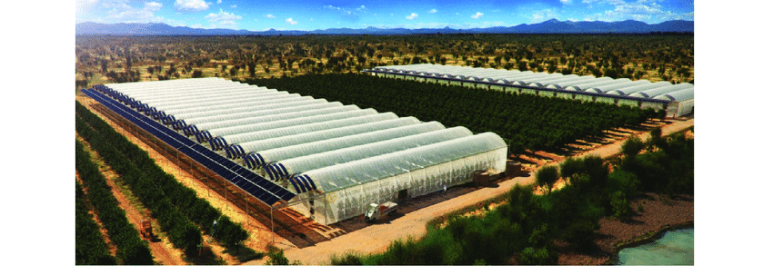
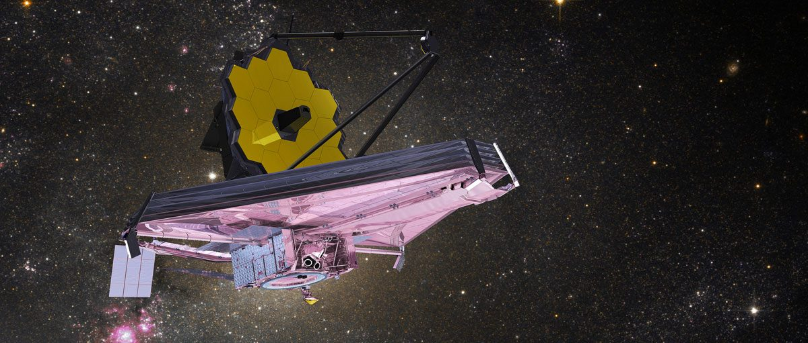
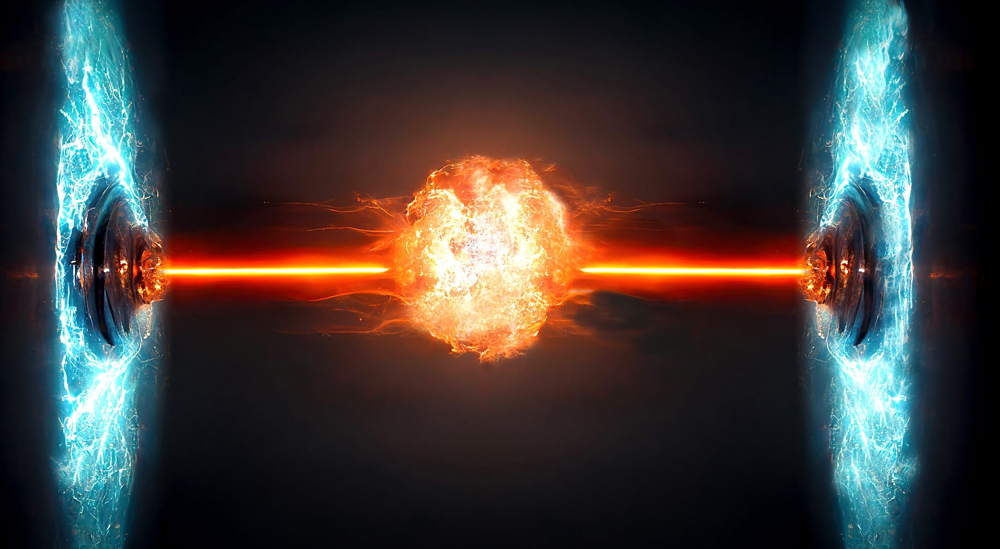

Our Invention
Our First Groundbreaking Invention:
SeaWater greenhouse 😀😉

Our second Earth-shattering Invention:
JWST(James Web Space Telescope) 😀😉

Our third breakthrough Invention:
Nuclear Fusion 😀😉
